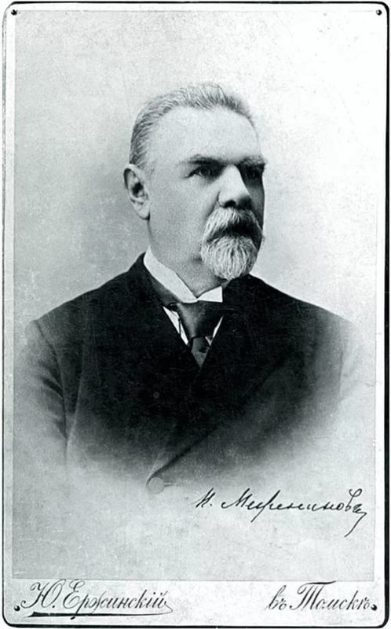

Н.П. Меженинов
Николай Павлович Меженинов (1838-1901) родился в старинной дворянской помещичьей семье, владевшей землями в Рязанской губернии с XVI века. Родовая усадьба находилась в селе Мишино.
В 1861 году окончил физико-математический факультет Императорского Московского университета (по отделению чистой математики, кандидат наук). В том же году поступил в Санкт-Петербургский институт инженеров путей сообщения. Окончил полный курс в 1863 году, получил звание инженера-поручика путей сообщения. Был назначен начальником дистанции седьмого округа путей сообщения Конотопской железной дороги.
В 1887 году назначен начальником изысканий Средне-Сибирской железной дороги. По докладу Н. П. Меженинова на основе изысканий, проведенных под его руководством в 1887—1889 годах, Министерство путей сообщения признало план «Сплошной Сибирской железной дороги» более выгодным в технико-экономическом отношении, чем сочетание водных и железнодорожных участков.
С августа 1889 по 1892 год, провёдя изыскания, строил железную дорогу Джанкой-Феодосия в Крыму. Пешеходный мост над железнодорожным путём в Феодосии назван Межениновским. Начальник строительства железнодорожной ветки Тайга-Томск (1895—1896).
В декабре 1895 года первые поезда пришли в Красноярск, в Иркутск — в феврале 1897-го. 31 марта 1897 года открыто движение по железнодорожному мосту через Обь. В 1899 году Средне-Сибирская железная дорога принята в постоянную эксплуатацию.